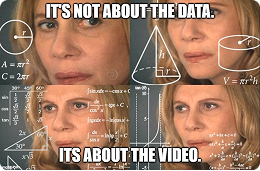
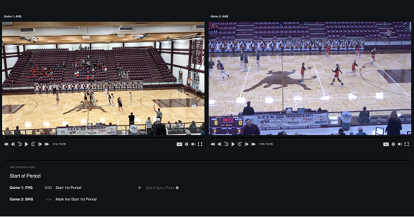
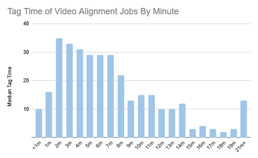
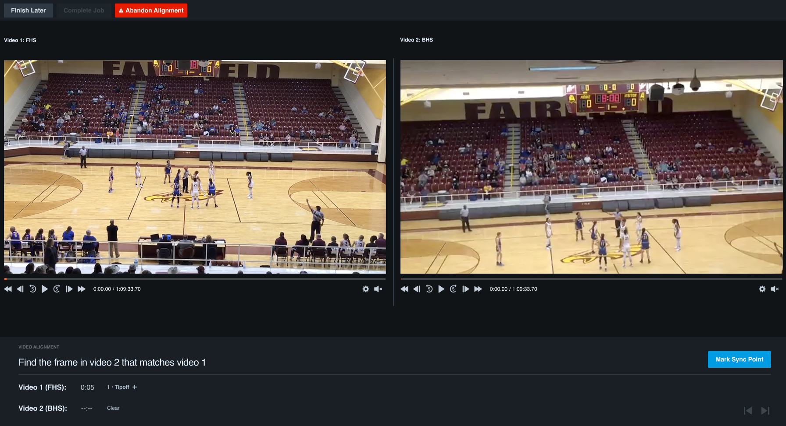
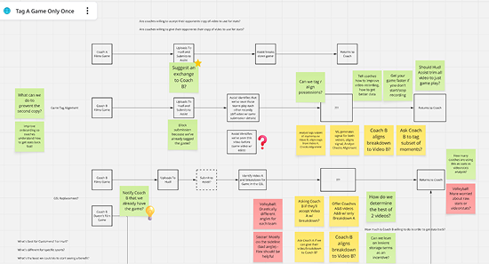

Video Alignment Tool
Tag a game only once — $500K saved, year over year
Hudl Assist
When both teams film the same game, Hudl pays analysts to break down both recordings — two passes, two hours each, for one set of data that should come out identical.
- Impact
- $500K saved a year in duplicate tagging
- Tag time
- 2+ hrs → 78 min per duplicate game
- My role
- Sole designer — research, prototype, shipped UI
- Team & timeline
- 1 quarter · 1 PM, 4 devs, 2 QA
How can Hudl save money by tagging a game only ONCE, when two recordings of the same game come in?
Paying twice for the same game
Hudl Assist breaks game film down into a list of events and the video timestamp of each one. When two teams submit their own recording of the same game, we have no way to move one breakdown onto the other — so analysts tag both. Roughly two analyst hours a video, doubled, for data that should come out identical.
That duplicate work was costing about $500K a year. Either we found a way to map a breakdown from one recording onto the other, or we stopped the second recording from being submitted at all.
What if only one recording of the game ever existed?
What it hinges on
- Would a coach skip filming their own game?
- Do they trust the other team to film it?
Could we give them their data before a credit is spent?
What it hinges on
- Is the opponent’s film good enough to use?
- Is their data there in time to matter?
Can one video’s tags be mapped onto the other?
What it hinges on
- Can two recordings of one game be aligned?
- Can an analyst run it without breaking it?
Research
Three strands, in the order they happened: what coaches would accept, which of four technical bets could actually work, and whether an analyst could run the winner without breaking it.
Research stopped the cheap fix no coach would like
The cheapest solution needed almost no engineering: ask a coach whether they’d take their opponent’s video to get their own data back faster. I interviewed 8 high school basketball coaches and surveyed 638 coaches across sports. The answer was a resounding no. They didn’t trust the other team to send film over quickly, they wanted their own camera angle, and they worried about the quality of whatever the opponent shot.
8
coaches interviewed in depth
638
coaches surveyed across sports
“No.”
what nearly all of them said to using the opponent’s film
A small slice of respondents would have taken the opponent’s data to get their breakdown back faster — nowhere near enough to build a business case on. Limiting duplicate submissions stayed on the board only as a backup.
That left the hard version: map a breakdown from one recording onto a different angle of the same game. Smart people at Hudl had tried before and failed.
Four bets in two weeks — one survived
So we raced four bets in parallel, hack-a-thon style. My engineers took the mathematical ones; I took the investigative ones — the backups we’d need if the math didn’t land.
Bet 1
Machine-learn the events
Tag a subset of events on Video B with ML, then transfer the rest across from Video A.
Bet 2
Head off the second submission
Tell the opposing coach the game is already broken down, and see whether that prevents the duplicate at all.
Bet 3
Hand-tag a few anchors
Bet 1 without the ML — tag a subset on Video B by hand, transfer the rest.
Bet 4 The winner
Align the video, not the data
Use the metadata already in the file to line the two recordings up, and every event moves at once. Not what Bet 4 started as — it was rewritten mid-sprint.
The reframe
The jobs that wouldn’t line up all had multiple media segments. The problem was never getting data onto the second video. It was aligning the two videos.
I was on Bet 2, digging through admin, when I noticed it. A coach who stops recording between plays isn’t submitting one video — they’re submitting a stack of pieces, and the pieces are what knock the timelines apart. I cut one in Premiere and aligned it by hand to prove it.
That killed Bets 1 and 3, which were both solving the wrong problem, and rewrote Bet 4: use the timestamps already sitting on each segment to line the recordings up, and every event crosses at once.
I made the argument with a meme. One of my devs saw the math behind it, and we spent the rest of the sprint proving it out. It worked.

I built the prototype myself, then tested it with 25 analysts
The math worked on two videos inside the team. Whether a Hudl Assist analyst could run it, on angles pulled from a much larger sample, was a different question — and my devs were tied up with critical bugs and backend work.
Rather than wait for them, or assume analysts could complete the workflow just because my team could, I built the front end myself in ProtoPie: two sets of playable video, real transport controls, and enough math behind it to feel like a live job. Twenty-five analysts ran it across moderated and unmoderated sessions.


Two things came back.
1. It worked.
Fast, accurate, and it absolutely solved the tag-a-game-only-once problem.
2. It worked if the tip-off was on film.
When the tip-off was missing from one of the videos, tag times crossed fifteen minutes and kept climbing.
We leaned on the tip-off because it’s easy to find and impossible to mistake for anything else. Without an anchor like it, an analyst is just scrubbing. So I fixed both problems in the design before a line of production code was written:
- Improved video navigation and keyboard shortcuts, so hunting for a new anchor is a few keystrokes instead of a search.
- A way to set the sync point anywhere in either video, rather than assuming it lives at the start of the game.
What shipped
A tagging interface with as little analyst interaction as possible: load both submissions, confirm one sync point, and every event crosses over in a single pass.

- Both submissions, stepped independently. Frame-accurate transport on each, because a near-match is not a match.
- One decision, one button. Confirming the sync point is the only thing the tool asks an analyst to judge.
- Anchored anywhere, not just the tip-off. The fix that came out of testing, when missing footage turned a two-minute job into a fifteen-minute one.
$500K a year, and no drop in quality
$500K
saved year over year on duplicate tagging
78 min
median tag time in testing, down from over 2 hours
No dip
guardrail: coach ratings held on real games after launch
What I’d do next
- A keyboard shortcut for setting a sync point. It’s still a mouse job, and it’s the one step an analyst does on every single alignment.
- Solve for multi. We handle one messy video well. Two messy videos — both chopped into segments, neither with a clean anchor — still fall back to manual work.
The vocabulary outlived the project
We invented so many terms that I couldn’t explain the work to another designer without twenty minutes of preamble — so I worked with a content designer to write a small dictionary. Teams across Hudl still use these words years later.
- Media segment
- One continuous piece of a game’s footage. A coach who pauses and resumes recording submits a stack of these, not one file.
- Sync point
- The moment in each recording we anchor the offset to. Normally the tip-off; when that footage is missing, the analyst picks another.
- Trusted source
- A segment carrying a real-world timestamp we can calculate an offset against.
- Untrusted source
- A segment with no reliable timestamp, or one that agrees with nothing else — the math has nothing to check itself against.
The working — the workshop, the math, and why the tip-off 2 min read
Where in the pipeline we could solve it
Before any of the bets, my PM and I ran a workshop to walk the squad through where a fix could live, which edge cases were real, and what our options actually were. It is the reason we went into the two weeks with four bets rather than four arguments.

The math the meme was standing in for
If we used the metadata timestamps on each media segment relative to each other, we could align the video in chunks. Where Video B has media segments we know exactly where its pauses are; where it doesn’t, we binary-search for them.

Why the tip-off, specifically
A sync point is technically arbitrary — any shared instant works. But anchoring on a real event gives you context clues, and context clues are what let someone land an almost frame-accurate match. The tip-off is easy to find and impossible to mistake for anything else, which is why it became the default rather than the requirement.